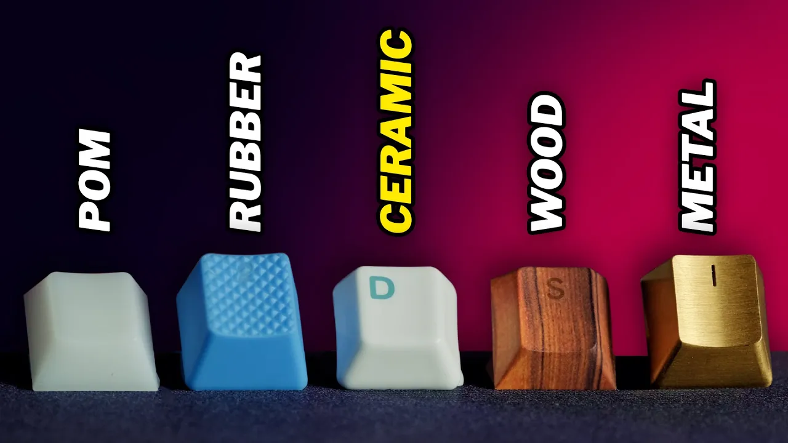
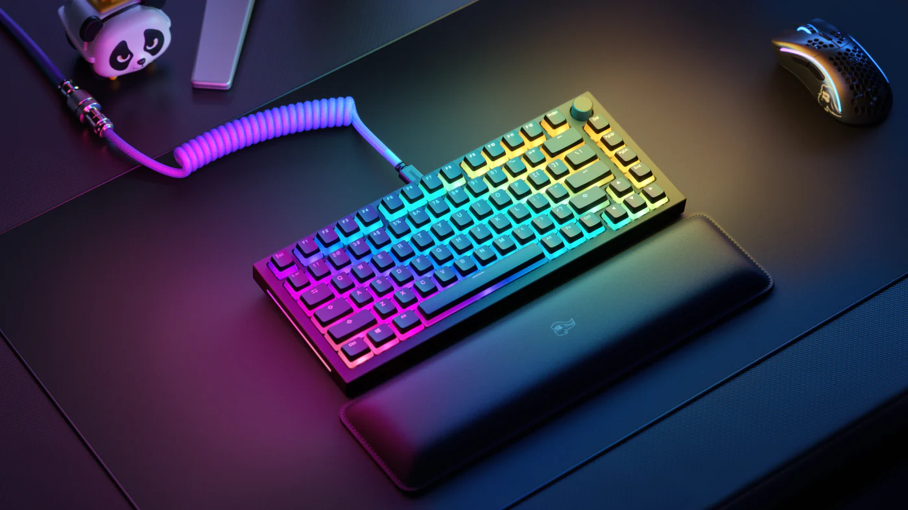
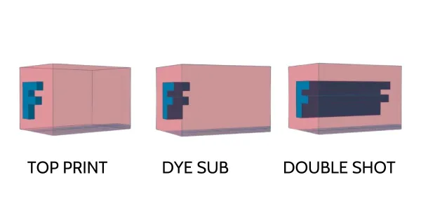
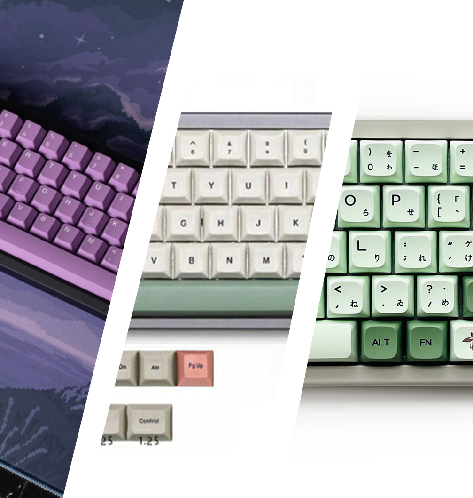

Keycaps
Everything from cherry to OEM to wood.
What are keycaps?
Keycaps are what cover switches. When you physically press down on a key, your finger is making contact with the keycap. Keycaps
are important as they affect both looks and sound. Finding the right keycap for you is crucial in designing
your personalized keyboard.

How can they affect sound?
A keycap's profile is what most affects sound. The majority of difference in sound between keycaps comes from the height,
with different profiles having different heights. There are many different profiles, so choosing which to go with can be tough.

Material matters too
While profile is the main factor in determining sound, material can play a role too. While most keyboards are either PBT or ABS,
there are certainly other materials you can go with. These include wood, ceramic, resin, and even metal. All these sounds impact
the sound of a keyboard in unique ways. If your interested in going with a more unique material, I suggest going on youtube to
see how the sound is affected by each material. If you do go with PBT or ABS, PBT usually is higher quality as it doesn't shine as much,
but ABS can be better in some use cases.

Light show!
Many keycaps have RGB compatibility, whether that be a small transparent key legend or a full pudding style keycap. While
often times the more RGB correlates to cheaper quality and a worse overall keycap, this isn't always true. If you're into to RGB,
go for it!

Double shot vs. Dye-sub
Double shot and Dye-sub are two methods to print the legends on the keycaps. Without going into specifics, double-shot
keycaps almost always look nicer, feel better, last longer, and are overall nicer than dye-sub. However, dye-sub can be a more affordable
option, so budget plays a role in which you choose. Dye-sub can be perfectly good in some cases and cost a lot less, so it's up to you
and your situation on which you choose.

Where to buy?
You can buy keycaps from a lot of places. You have your websites drop.com, novelkeys, and divinikey websites. Sometimes these aren't
the best option for your scenario, however. While many official cherry profile keycaps can be upwards of 150$ on official websites,
amazon provides much cheaper options for comparable quality. Are you gonna get the real thing? No. Am I telling you to buy
knockoff cherry keycaps off of amazon? Not legally. But it might just be a good idea.
